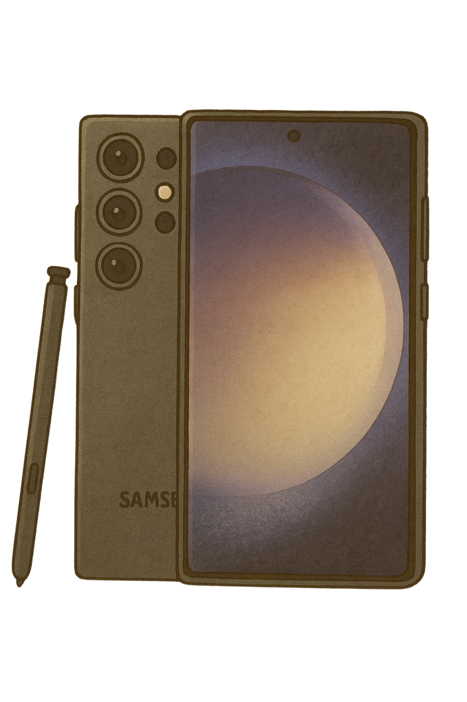
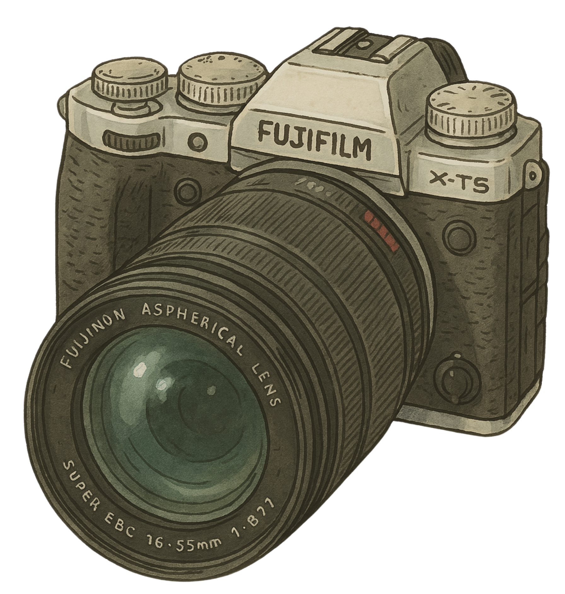
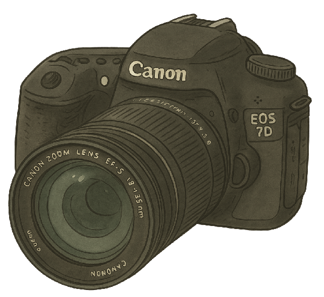

💠Mon matériel photo
Voici les compagnons qui m’accompagnent à chaque aventure, du lever de soleil dans les montagnes aux ruelles tranquilles d’un vieux village japonais…
📱 Smartphone
Samsung S23 Ultra – parfait pour les photos rapides et les vidéos en voyage
📸 Appareils photo
Fujifilm X-T5 – léger, qualitatif, parfait pour la photo de rue ou de paysage
Canon EOS 7D – un peu lourd, mais toujours fiable quand je veux de la précision
🛸 Drone
DJI Mini 3 Pro – compact, facile à transporter, parfait pour capturer des paysages depuis le ciel.
💠Autres accessoires
- Trépied compact
- Filtres ND
- Micro-cravate pour les vidéos
- Power bank (parce qu’un crépuscule ne t’attend pas !)
Bientôt, tu pourras voir un exemple de photo ou vidéo prise avec chaque appareil 🎥📷✨